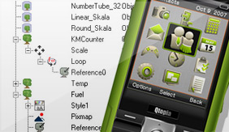
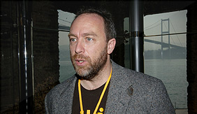
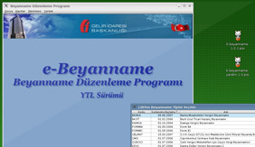

Nokia, Trolltech’i 816 milyon pound’a satın aldı!
Pardus Qt/KDE tercihini yaparken dünya devleriyle paralel düşünmüş olsa gerek… Nokia Ocak ayı sonunda Norveç kökenli yazılım firması Trolltech’i yaklaşık 816 milyon pound karşılığında aldı. Trolltech çapraz platform uygulama omurgası ve geliştirme araçları sağlayıcısı önemli bir firma. Trolltech uygulama geliştirme firması, mobil dünya devinin operasyonunda çok önemli bir bileşen haline geldi.
Trolltech’in Qt teknolojisi, içlerinde Adobe ve Google’ın da bulunduğu pek çok uygulama sağlayıcısı tarafından, PC platformlarına uygulama sunmak için kullanılıyor. Trolltech şirketi Skype, Gogle Earth, Adobe Photoshop Elements ve daha başka pek çok ürünün grafik arayüzlerinin geliştirilmesinde kullanılan dünyaca meşhur Qt kütüphanesini geliştiren firma. Trolltech Ot dünya çapında 5.000 firma tarafından kullanılıyor. Trolltech yazılımları da dünya çapında 10 milyon cihazda kurulu.
Qt ayrıca açık kaynak dünyası tarafından da kullanılıyor ve Linux için KDE masaüstü ortamının temelini oluşturuyor. Bu teknoloji aynı zamanda Motorola tarafından kendi Linux mobil telefon platformunun da temeli olarak kullanılıyor.
Nokia'nın GPL ile kod yayınlamaya devam edeceği bilgisi yanında, bu anlaşma özgür yazılıma verilen desteğin bir uzantısı olarak tarif ediliyor. Nokia yaptığı açıklamada bu anlaşmanın Trolltech’in tüm çalışanlarını ve varlıklarını kapsadığını belirtti. Nokia ayrıca Qt/Qtopia’nın Nokia’nın yazılım stratejisinde çok önemli bir noktaya geleceğini vurguladı.
Nokia hedefine yaklaştı
Firma resmi beyanatında şunları söylüyor; “Trolltech’in satın alınması, Nokia’nın mobil cihazlar ve masaüstü uygulamalar için çapraz platform yazılım stratejisini hızlandıracak ve Nokia internet servis işini geliştirecektir. Trolltech ile Nokia ve üçüncü parti geliştiriciler, Nokia’nın ürün portfoyü ve PC’ler üzerinden erişilebilen ve ayrıca internet üzerinde çalışan uygulamalar geliştirebilecekler.”
Nokia’nın yazılım stratejisi; Nokia cihazları için uygulama geliştirmeyi mümkün kılacak, çapraz platformlarda geliştirme ortamlarına ya da farklı işletim sistemleri üzerinde koşabilen yazılım katmanlarına dayanıyor. Örneğin şu anki çapraz platform katmanları Flash, Java ve Open C.
Ovum’un kıdemli analistlerinden Adam Leach; “Nokia’nın perspektifinden bakıldığında Ovi ile internet servislerine girmek için Trolltech’i almak mükemmel bir düşünce. Nokia başından beri, Ovi’nin web, PC ve mobil tabanlı platformları içeren birçok platform için servisleri mümkün kılabileceğini öne sürüyordu. Trolltech çapraz platform geliştiriminde ispatlanmış teknolojiye sahip ve şimdi Nokia ile çok güzel bir sinerji yakalamış durumda” diyor.
Pardus geliştirici toplantısı düzenlendi!
Bahçeşehir Üniversitesi Yazılım Mühendisliği bölümü ev sahipliğinde gerçekleştirilen Pardus geliştirici toplantısı, oldukça verimli geçti. Bu yıl Gnome dünyasının heyecan verici etkinliği Guadec'e de 7-12 Temmuz 2008 tarihleri arasında ev sahipliği yapacağı bilinen Bahçeşehir Üniversitesi, Yazılım Mühendisliği Bölümü Başkanı Nizamettin Aydın'ın konukseverliğinde Pardus geliştiricilerini 20 Ocak Pazar günü ağırladı.
Toplantı Pardus geliştiricilerinin, Gebze yerine İstanbul'da merkezi bir adresi tercih edeceklerini belirtmeleri üzerine Nizamettin Aydın’ın da desteği ile Bahçeşehir Üniversitesi Yazılım Mühendisliği Bölümü’nde gerçekleştirildi.
Erkan Tekman'ın Pardus'un marka politikası ve fikri mülkiyetinin temsiline ilişkin genel stratejisine yönelik yaşanan gelişmeleri anlattığı bir sunumu ile açılan toplantı, Pardus 2008'in getireceği ve gerektirdiği altyapı değişikliklerinin tanıtımıyla sürdü.
“Çomar 2.0, qt4 ve onu kullanan yeni Yalı neler getiriyor? Nasıl çalışacaklar?” sunumlarının ardından katılımcılar, tüm özgür yazılım camiasında en yeni yaygın değişikliklerden *-kit yapılarının bir tanıtımını izlediler ve onlardan (Package-Kit, Policy-Kit gibi) nasıl yararlanacağına dair önbilgiler aldı.
Pardus 2008'in depo politikası, 2007'nin desteklenmesine ilişkin strateji taslağı, küresel özgür yazılım camiasıyla daha somut ilişkiler kurmanın yöntemleri vb. önemli konularda serbest tartışma ortamı olarak planlanmış olan öğleden sonraki bölüm ise önemli kararların da alındığı ve önümüzdeki günleri şekillendiren bölüm oldu. Bu konuda hem günlüklerde hem de geliştirme ortamını takip edenler açısından listelerde ve kaynak kod deposunun raporlarına yansıyacak olan hareketlilikte daha çok bilgi bulabilirsiniz.
Pardus'un geliştirme ortamı, ister izleyici ister katılımcı olarak herkese açık. Pardus Genel Kamu Lisansı (GPL) doğrultusunda herkesin rahatlıkla katkı sağlayabileceği açık bir yapı sunuyor.
Boğazda Wikipedia rüzgarı esti
İstanbul’da 18 Ocak’ta Jimmy Wales rüzgarı esti. Kendini insanlığın gelişimine adayan ve Wikipedia’yı yaratarak herkesin doğru bilgiye kolayca ulaşmasını sağlayan bu genç adam, dünyayı bir misyoner gibi dolaşarak tüm internet girişimcilerine de ilham veriyor. Jimmy Wales, tek yaşam alanımız olan, çabuk gelişen, çabuk tüketilen ve hızla kirlenen bir dünyayı temizlemek adına, 2001 yılından beri hiçbir maddi beklentisi olmadan var gücüyle çalışıyor. Her gün dünyanın farklı şehirlerinde projesini tanıtıyor; konferanslar veriyor.
Kimdir peki bu Jimmy, nam-ı diğer “Jimbo” Wales? 1966 doğumlu olan Wales, Amerikalı bir internet girişimcisi. 1994-2000 yılları arasında Chicago Options Associates’de araştırma müdürü olarak çalışan Wales. 2000 yılından beri çeşitli wiki projelerini yürütüyor. Kendisi internet ansiklopedisi Wikipedia’nın, Wikimedia Vakfı’nın ve aynı zamanda da Wikia adlı şirketin kurucusu. (Bilindiği gibi Pardus-wiki, Wikipedia.tr 'den sonraki en büyük ikinci Türkçe Wiki olduğu için, Wikia'ya katılması için özel bir davet almış durumda.)
Ütopya gerçek oldu
Jimmy Wales, uzun yıllar Chicago Borsası’nda çalıştıktan ve çok başarılı olduktan sonra, bilgiye ulaşmada sınırları kaldıran Wikipedia projesini hayata geçirdi. Doğru bilginin demokratik bir şekilde toplanmasını ve paylaşılmasını sağlayacak; bunu yaparken de kar amacı gütmeyecekti. Tek istediği Sri Lankalı bir kızın, New York’taki bir üniversiteliyle aynı anda aradığı bilgiye ulaşabilmesiydi.
Tüm dünyada büyük ilgi gören ve içeriği kullanıcılar tarafından oluşturulan Wikipedia’da 247 dilden milyonlarca makale bulunuyor. En çok kullanılan dil, 2 milyonu aşkın maddeyle İngilizce. Onu, Almanca, Fransızca, Lehçe ve Japonca izliyor.
Jimmy Wales, Wikipedia’yı “Tüm insanlığın bilgi birikimine özgürce ulaşılabilecek bir dünya” olarak tanımlıyor. İnternete ulaşabilen herkesin ansiklopedinin içeriğini belirleyebilmesi ve katkıda bulunması gerektiğini düşünüyor. Kamu yararı gözetilerek ücretsiz işleyen Wikipedia’nın masrafları bağışlardan karşılanıyor.
Jimmy Wales, Wikipedia felsefesinin özündeki “bilgiye özgürce erişim” mantığında geliştirdiği “Özgür Kültür Hareketi” adlı girişimle, ücretsiz olmasını düşündüğü ve bütün insanlığın ulaşabilmesi gerektiğine inandığı 10 maddelik bir liste hazırlamış. Bunlar arasında online atlas, dünyadaki öğrenci orkestraları tarafından icra edilmiş bir klasik müzik repertuarı, anaokulundan üniversiteye kadar tüm ders kitaplarını içeren bir online bilgi kaynağı ve büyük ressamların resimlerinden oluşan bir görüntü arşivi yer alıyor.
Wales, asıl işini “iyileştirme” olarak tanımlıyor. Bu çerçevede geliştirdiği “Wikia Search” adlı arama motoru da 7 Ocak’ta faaliyete geçti. Ama o sadece 12 kişilik ekibi ile bunu Google arama motoruna rakip olarak görmüyor. Fakat sanırız Google tam tersini düşünüyor. Wikipedia’nın gelişim eğrisine bakacak olursak Google’ın bu endişesi çok da yersiz sayılmaz.
Türkçe makaleler 98 bine ulaştı
Katılımcıların yoğun ilgi gösterdiği seminerde Jimmy Wales, kurucusu olduğu internet ansiklopedisi Wikipedia, Wikia ve en yeni projesi olan Wikia Search’ten bahsetti. Wales, Wikipedia’da 98 bin Türkçe makale bulunduğunu, bunun memnuniyet verici olduğunu söyledi. Bilgiye sınırsız erişimin önemine de değinen Jimmy Wales, önümüzdeki 5-7 yıl içinde 1 milyar kişinin daha internete erişiminin olacağını belirtti. Ayrıca seminerde internette içerik, özgürlük ve sorumluluk kavramları da ele alındı.
E-devlet, hiç bu kadar kolay ve keyifli olmamıştı!
PARDUS kullanıcıları için İnternet Vergi Dairesi’nde oluşturulan “PiSi Deposu”, e-Beyanname düzenleme işleminin, hızlı ve kolayca yapılabilmesini sağlıyor.
T.C. Maliye Bakanlığı Gelir İdaresi Başkanlığı İnternet Vergi Dairesi’nin “https://e-beyanname.mb-ggm.gov.tr/ebyn/download.html” adresine giren mükellefler, kolayca e-Beyanname uygulamasından faydalanabiliyorlar. Bunun için tek yapmaları gereken, Beyanname Düzenleme ve yardım programlarını bilgisayarlarına indirmek ve kurmak. Mükellefler, programların listesini ve tüm açıklamalarını yine bu adreste bulabiliyorlar.
Beyanname Düzenleme Programı (BDP) ve Beyanname Düzenleme Programı Yardımı (BDP Yardım) bu sayfada iki ayrı dosya olarak bulunuyor. Mükellefler ister Windows, ister Linux isterlerse Pardus işletim sistemine uygun “BDP” ve “BDP Yardım” dosyalarını indirip kendi bilgisayarlarına kolayca kurabiliyorlar.
Pardus kullanıcıları çok şanslı!
Pardus kullanan mükellefler diğer işletim sistemlerini kullananlara göre çok daha şanslı. Çünkü Pardus kullanıcılarının Beyanname Düzenleme Programı’nın en güncel sürümünü otomatik olarak sistemlerine kolayca yükleyip kurabilmeleri için özel bir “PiSi Deposu” oluşturulmuş durumda. Bu depoyu sistemlerine ekleyen Pardus kullanıcıları, her seferinde İnternet Vergi Dairesi web adresine girip BDP yazılımının yeni bir sürümü çıkmış mı diye araştırmak zorunda kalmıyorlar.
Pardus kullanıcılarının bu servis/hizmetten yararlanmaları için yapmaları gereken tek şey, menüden “Paket Yönetici”sini çalıştırarak “Ayarlar” bölümünden yeni depo olarak ilgili adresi girmeleri. Bunu bir kere yaptıktan sonra, artık Pardus işletim sistemi üzerinde daha önceden kurdukları “Beyanname Düzenleme Programı” ikonunu tıklamaları yeterli. Program otomatik olarak ilgili web sayfasındaki PiSi Deposu’na erişip, güncellemeler var ise bunları indirip kendisini otomatik güncelliyor. Dolayısıyla Pardus, bir kez daha kullanıcılarını zahmetten kurtarıyor ve bir e-devlet uygulamasını keyifli ve kolay hale getiriyor.
Bu projenin hayata geçmesinde büyük emeği olan Maliye Bakanlığı Gelir İdaresi Başkanlığı Uygulama ve Veri Yönetimi Dairesi Başkanlığı mühendislerinden Bedri Keskin şunları söylüyor; “Bildiğiniz gibi mükellefler bilgisayarda beyannamelerini hazırlayıp ardından da internet ortamında gönderebiliyorlar. Başlangıçta e-Beyanname düzenleme ve yardım uygulamaları Windows işletim sistemi için geliştirilmişti. Mükelleflerden gelen talepler üzerine genel Linux dağıtımlarına (Ubuntu, Suse, ...) kurulabilen tar.gz’ler oluşturuldu. İlk önceleri Pardus kullanıcıları da bu tar.gz’ler ile kuruyorlardı. Fakat tar.gz’ler ile kurulum komut satırından sıkıştırılmış dosyayı açmak, doğru klasöre kopyalamak, dosyaların okuma/yazma izinlerini ayarlamak gibi ileri seviye bilgi gerektiriyor, zahmetli oluyordu. Daha sonra Pardus işletim sistemine özel PİSİ (Packages Installed Successfully as Intended) paketleri hazırlanarak web sitesine konuldu. Böylece Pardus kullanıcısının e-Beyanname uygulamasını kurması için pisi paketini indirip çift tıklaması yeterliydi. Son olarak kurulum ve güncellemenin Paket Yöneticisi vasıtasıyla otomatik yapılabilmesi için depo inşa edildi ve paketler deponun içerisine konuldu.”
On binlerce kez indirildi
Hazırlanan PiSi Paketleri 10 Ekim 2007’de yayınlanmış. Daha sonra PiSi Paketlerinin “Pardus Resmi Deposu” içerisine yerleştirilmesi düşünülmüş. Fakat Pardus geliştiricilerinin tavsiyeleri üzerine Maliye Bakanlığı Gelir İdaresi Başkanlığı kendi deposunu hazırlamış ve Ocak ayı başında hizmete sunulmuş.
1 Ağustos 2007’den bugüne “ebyn_pardus.tar.gz” dosyasının 30 bin 173 kez indirildiğini söyleyen Keskin, e-Beyanname PiSi Paketi’nin de 10 Ekim 2007 tarihinden bu yana 5 bin 710 kez indirildiğini söylüyor. PiSi Deposu’nu 11 Ocak 2008 tarihinde faaliyete geçirdiklerini anımsatan Keskin, sistemlerine depoyu ekleyen Pardus kullanıcıları sayısının da her geçen gün arttığını belirtiyor.
Platform bağımsız, özgür sistemler!
Pardus Proje Yöneticisi Erkan Tekman ise özellikle Kamu hizmetlerinde açık standartlar ve platform bağımsız yapılar sunulmasının anlam ve önemine işaret ediyor ve şunları söylüyor; “Gelir İdaresi Başkanlığı’nın, e-Beyanname uygulamasını platform bağımsız bir yapıda tasarlaması, günümüz bilişim dünyasının beklentilerine en uygun yaklaşımı sergileyen çok başarılı bir örnek. Bu tasarımı gerçekleştirenlerin, Pardus'un Türkiye'deki yaygınlığını göz önünde bulundurarak ayrıca PiSi Paketi dağıtmaları ve Pardus kullanıcılarının yaşamlarını kolaylaştırmaları bizi pek çok açıdan heyecanlandırdı. Öncelikle, kamu hizmetlerinde açık standartlar ve özgür sistemlere yönelik böylesi bir güç ve işbirliği uzun zamandır beklediğimiz bir sürecin ilk olgun sonuçları arasında... Ayrıca, bu PiSi Paketi gösteriyor ki, Pardus, üçüncü kişiler için de ürün geliştirmeye uygun bir altyapı ve dikkat çeken bir pazar sunuyor. Bu kararın ne kadar isabetli olduğunun en somut göstergesi de, paketin binlerce vergi mükellefi tarafından indirilmiş olması... Bizim de bu andan itibaren beklentimiz hem özgürce beyannamelerini dolduran vatandaşlarımızın, hem de böylesi işbirliklerinin çoğalması.”
Bedava mı? Açık mı? Özgür mü?
Benim durduğum yerden bakınca özgür yazılım ile iş dünyamız ve hatta özgür yazılım ile BT sektörümüz arasında koca bir açıklık görüyorum.
Erkan Tekman
BT sektörümüz, özellikle sahipli yazılım üreten sektör aktörleri özgür yazılımı bir tehdit olarak algılıyorlar. Genel geçer söyleme göre her tehdidin bir fırsat olarak değerlendirilebileceği açık. Ama bunun için tehdidi doğru bağlama yerleştirmeniz gerekiyor. Oysa BT sektörünün özgür yazılımı doğru bağlama yerleştirmesi ve hatta özgür yazılımı herhangi bir bağlama yerleştirmesi mümkün olamamış gibi duruyor. Bu makalemin amacı özgür yazılımın doğru bağlama yerleştirilmesine, dolayısı ile özgür yazılımın bir fırsat olarak algılanmasına ve dolayısı ile özgür yazılım ile iş dünyamız ve BT sektörü arasında bir köprü kurmaya naçizane bir katkıda bulunabilmek.
Doğal olarak ilk adımımız özgür yazılımın tanımını yapmak. Çoğu zaman işe yarayan İngilizce karşılıktan yola çıkmak yöntemi, bu durum için kafaları berraklaştırmak bir yana, düpedüz daha da karıştırıyor. Free software içindeki free sözcüğü hem bedava (as in free beer), hem de özgür (as in free speech) anlamına geliyor. Free software ile freeware birbirine karışıyor. Bu karmaşayı aşalım diye bir adım attığımızda open source kavramı ile karşılaşıyoruz, yani açık kaynak. Ama açık kaynak için en yetkin web sitesindeki (www.opensource.org) tanım sayfası “Açık kaynak yalnızca kaynak koduna erişim anlamına gelmez” diyor ve özgür yazılımı tanımlamaya girişiyor. Özgür yazılımı merak ettiğimizde gideceğimiz site (www.fsf.org) ise neden açık kaynak ile özgür yazılımın aynı şey olmadığını açıklamakla başlıyor işe. Atlantik'in bizim yanına geçtiğinizde ise FOSS (Free/Open Source Software) ve FLOSS (Free/Libre/Open Source Software) gibi kısaltmalarla karşılaşıyoruz.
Başa dönelim: Doğal olarak ilk adımımız özgür yazılımın tanımını yapmak. Bunu da Özgür Yazılım Vakfı (Free Software Foundation-FSF) tarafından geliştirilen ve en çok kullanılan özgür yazılım lisansı olma özelliğine sahip Genel Kamu Lisansı (GNU General Public License-GPL) üzerinden yapalım: Özgür yazılım, kullanıcısına yazılımın fikri mülkiyet hakları üzerinde hayli geniş bir hareket kabiliyeti sağlayan bir dizi özgürlük ile tanımlanır:
● Özgürlük 0: Programı sınırsız kullanma özgürlüğü.
● Özgürlük 1: Programın nasıl çalıştığını inceleme ve amaçlara uygun değiştirmeözgürlüğü. (Bu özgürlük kaynak kodunun açık olması şartını getiriyor!)
● Özgürlük 2: Programın kopyalarını sınırsız dağıtma özgürlüğü.
● Özgürlük 3: Programın değiştirilmiş halini dağıtma özgürlüğü. (Pardus gibi Linux dağıtımlarının varlığını bu özgürlük sağlıyor!)
GPL bu özgürlükleri kullanmanız karşılığında sizden tek bir şey bekliyor: Programın kaynak kodunu değiştirerek oluşturduğunuz türev yazılımı da GPL ile lisanslamanız, yani özgür bırakmanız! Dev bir yazılım envanterine sınırsızca erişebilmek için ödenecek bir bedel gibi duruyor, değil mi? Biz böyle düşünüyoruz.
İki konuyu irdeleyelim: Önce, özgür yazılım ve telif hakları: Özgür yazılım geliştiricisinin telif haklarını (copyright) tepetaklak eder ve kullanıcısına bırakır (copyleft). Bu hali ile neredeyse fikri mülkiyet haklarının devri anlamına gelir. Bu hali ile neredeyse kullanıcıyı yazılımın sahibi durumuna geçirir. Peki, sahipli yazılım üreten yazılım firmaları telif haklarına, dolayısı ile fikri mülkiyetlerine sahip çıkarken neden bir geliştirici (kişi, grup ya da firma) bunun tam tersini yapar? Kısa yanıt: Daha yenilikçi, daha esnek, daha kaliteli, daha güvenli, daha güvenilir, daha kolay ulaşılabilir yazılım ürünleri üretebilmek için. Uzun yanıtı gelecek e-bültenlerimizdeki makalemde irdeleyeceğim.
Hareketle ikinci konu: Özgür yazılım ve ticari yazılım: Görüldüğü üzere GPL lisansında, özgür yazılım ya da açık kaynak tanımlarında ticari faaliyet ve üretici ile kullanıcı arasındaki parasal ilişkiler ile ilgili herhangi bir koşul ve kısıt mevcut değil. Özgür yazılım, rahatlıkla bir ticari faaliyete temel oluşturabilir. Ki oluşturuyor da, özgür yazılım pazarının milyarlarca dolar büyüklüğünde olduğu, önümüzdeki on yıllarda on milyarlarca dolara büyüyeceği yönünde kestirimlere rastlamak mümkün. Ancak, ufak bir zihin deneyi özgür yazılım ürününün fiyatının sıfır olması gerektiğini gösteriyor. Peki, o zaman özgür yazılımdan nasıl para kazanılır? Yanıtı gelecek yazılarda...

Bu web sitesinde bulunan bilgi ve belgelerin, kaynak gösterilmek koşulu ile kullanılması serbesttir.
Pardus markası ve logotipi TÜBİTAK'ın tescilli markasıdır. Kullanım koşulları için Yasal Uyarı bölümünü inceleyiniz.
Pardus hakkında merak ettikleriniz için lütfen yardım sayfasına başvurun.
TÜBİTAK - UEKAE, PK.74 41470, Gebze / Kocaeli.